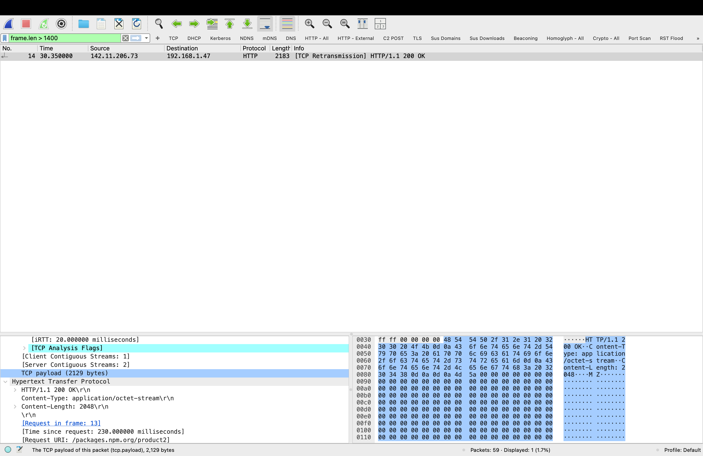
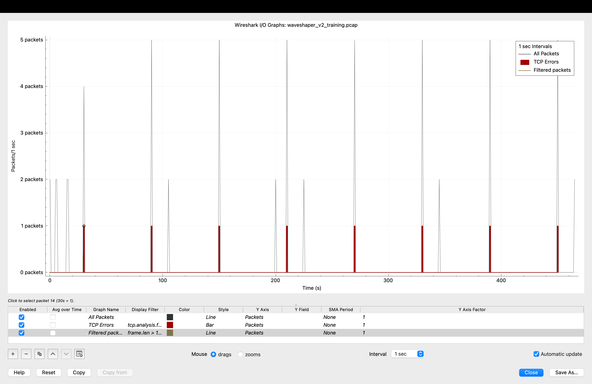
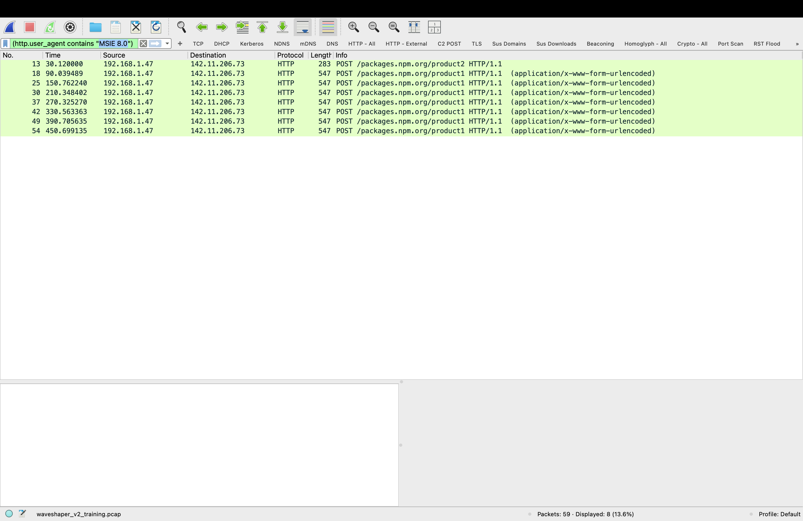
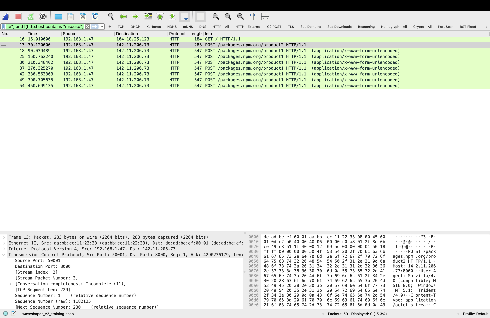

Context — Why This Traffic Matters
On March 31, 2026, UNC1069 — a North Korea-nexus threat actor linked to BlueNoroff and the Lazarus Group — compromised the npm maintainer account for axios, the most widely used JavaScript HTTP client with over 100 million weekly downloads. They injected a malicious dependency named plain-crypto-js that silently deployed WAVESHAPER.V2, a cross-platform remote access trojan, to every system that ran npm install during a three-hour window.
This lab analyzes a synthetic training pcap built from publicly documented WAVESHAPER.V2 behavioral indicators — the 60-second beacon interval, the IE8/Windows XP User-Agent fingerprint, the Base64-encoded JSON telemetry, and the confirmed C2 infrastructure at 142.11.206.73:8000. The goal is to demonstrate what this attack looks like in Wireshark and how pre-built behavioral detection filters catch it — in some cases faster than IOC-specific signature rules.
The full threat analysis is documented in the companion report 60 Seconds. This lab focuses on detection methodology.
First Filter — Large Packets
Catch the Stage 2 Download
My first filter was a pre-built behavioral rule I use across all captures: frame.len > 1400. This flags any frame larger than 1400 bytes — the threshold that separates routine acknowledgment packets from packets carrying significant data payloads. It returned one result in this capture.

Frame 14 — a single 2,183-byte HTTP response from 142.11.206.73 to 192.168.1.47 at T=30.35s. Content-Type: application/octet-stream. The hex pane shows 4D 5A — the MZ magic bytes of a Windows PE executable. This is SILKBELL delivering WAVESHAPER.V2 to the victim machine.
Frame 14 is the moment of infection — the C2 server responding to SILKBELL's initial check-in with the WAVESHAPER.V2 payload. The packet detail pane confirms:
| Field | Value | Significance |
|---|---|---|
| Source | 142.11.206.73 | Confirmed C2 IP — GTIG public IOC |
| Destination | 192.168.1.47 | Victim developer workstation |
| URI | /packages.npm.org/product2 | SILKBELL stage 2 download endpoint |
| Content-Type | application/octet-stream | Binary blob — not a web page |
| Content-Length | 2048 bytes | PE executable delivered |
| Magic bytes | 4D 5A (MZ) | Windows PE executable header — confirmed |
| Timestamp | T = 30.35s | 30 seconds after npm install executed |
This is the single most important packet in the capture. Frame 14 is the exact moment WAVESHAPER.V2 arrived on the victim machine. In a real incident, isolating the host at this timestamp and imaging memory immediately would capture the RAT before it established persistence.
Second Filter — Beaconing
Confirms the C2 Channel
With the C2 IP identified from Frame 14, I applied my pre-built beaconing filter: ip.dst == 142.11.206.73. This shows all traffic destined for the C2 server — the full picture of how many times the infected machine checked in and at what intervals.

I/O Graph with beaconing filter applied — showing only C2-destined traffic. Seven spikes at machine-precise 60-second intervals from T=90s to T=450s. The small dot at T=30s is the SILKBELL stage 2 download. With all other traffic removed the regularity is unambiguous — this is not human-generated traffic.
The Beacon Pattern —
Visualizing What the Filters Found
After confirming the C2 IP from the large packet filter and scoping the beacon count with the beaconing filter, I opened the Wireshark I/O Graph — Statistics → I/O Graphs — to visualize the full pattern. What the timestamp column showed numerically, the graph makes immediately obvious visually. Seven evenly spaced spikes from T=90s through T=450s. The mechanical regularity of a RAT checking in every 60 seconds looks nothing like human-generated traffic or legitimate application behavior.
The I/O Graph is shown above in Figure 2 alongside the beaconing filter results. The red bars are TCP errors from the synthetic pcap's simplified checksums — not a real infection artifact. The gray spikes are the beacon pattern. The regularity is the signal.
Detection principle: Beaconing regularity is a behavioral indicator that survives variant updates. WAVESHAPER.V2 and WAVESHAPER both beacon at 60-second intervals regardless of code changes. A detection rule targeting interval regularity catches new variants that evade signature-based rules targeting specific code patterns.
Two Filters, Same Result — Different Reasons
After confirming the beacon pattern I applied two HTTP-level filters to the same capture. Both returned identical results — 8 packets, all WAVESHAPER.V2 C2 traffic. But they work on completely different detection logic, and understanding the difference matters for building a real detection strategy.

8 packets displayed — all HTTP POST requests from 192.168.1.47 to 142.11.206.73:8000. Filter matches on the WAVESHAPER.V2 hardcoded User-Agent: Mozilla/4.0 (compatible; MSIE 8.0; Windows NT 5.1; Trident/4.0). Internet Explorer 8 on Windows XP has not been in legitimate use since 2014.

9 packets displayed — same C2 POST requests plus one additional legitimate HTTP request to a non-safe-listed host. The filter catches everything going outbound that is not on the known-safe list, regardless of what the specific malware is.
Logic: Matches a specific known malware fingerprint — the hardcoded IE8/WinXP User-Agent string documented by GTIG.
Requires: Prior knowledge of WAVESHAPER.V2 specifically. Would not catch a variant that changes the User-Agent string.
False positive rate: Zero. No legitimate software in 2026 sends an IE8/WinXP User-Agent.
When it fires: Confirms attribution. You know exactly what you are looking at.
Logic: Catches anything making outbound HTTP requests to hosts not on the known-safe allowlist.
Requires: No prior knowledge of the specific malware. Works on unknown threats.
False positive rate: Higher — any legitimate app not on the safe list will appear. Requires triage.
When it fires: Flags anomalous outbound traffic. Investigation determines if it is malicious.
Key insight: The behavioral filter would have caught WAVESHAPER.V2 on day zero — before GTIG published the IOC, before any signature existed, before anyone knew what WAVESHAPER.V2 was. The moment it started making outbound HTTP requests to a non-safe-listed destination, the behavioral filter fired. The signature filter confirms the attribution after the fact. Use both — behavioral detection for real-time alerting, signature detection for triage and confirmation.
Detection Priority Order
In a real SOC workflow these filters work in sequence, not in isolation:
Step 1 — frame.len > 1400 finds single large packet from unknown IP → C2 IP 142.11.206.73 identified Step 2 — ip.dst == 142.11.206.73 scopes all C2 connections → 7 beacons at 60-second intervals confirmed Step 3 — I/O Graph visualizes the beacon pattern → machine-precise regularity visually confirmed Step 4 — HTTP External filter catches all suspicious outbound HTTP → same 8 packets, no IOC knowledge needed Step 5 — http.user_agent contains "MSIE 8.0" confirms WAVESHAPER.V2 attribution → escalate with confidence # Result: CRITICAL — WAVESHAPER.V2 infection confirmed # Action: Isolate host, image memory, rotate all credentials
What Should Have Fired — and When
The three-hour detection window in the real axios attack was not inevitable. Behavioral detection rules would have fired within 30 seconds of npm install executing — at the moment SILKBELL downloaded the stage 2 payload. Signature-based rules failed entirely because WAVESHAPER.V2 was a new variant. The gap was not tool capability. It was rule coverage.
| Detection Rule | Would Have Fired | At | Requires |
|---|---|---|---|
| Large packet from unknown IP | Yes | T = 30s | frame.len > 1400 rule on outbound traffic |
| Outbound HTTP to non-safe host | Yes | T = 30s | HTTP External behavioral filter |
| Beaconing to port 8000 | Yes | T = 90s | Outbound port 8000 alert rule |
| IE8/WinXP User-Agent | Yes | T = 90s | User-Agent anomaly detection |
| WAVESHAPER.V2 YARA signature | No | After GTIG publication | Signature written post-discovery |
| Antivirus detection | No | After signature update | New variant not in database |
Every behavioral detection rule would have fired within the first 90 seconds. Every signature-based rule failed because WAVESHAPER.V2 was a new variant. This is the core argument for behavioral detection over signature detection — not as an either/or choice but as a layered strategy where behavioral rules catch the unknown and signatures confirm the known.
Findings Summary
This lab demonstrated that WAVESHAPER.V2 C2 traffic is detectable using general-purpose behavioral filters that require no prior knowledge of the specific malware. The I/O Graph revealed the beacon pattern after the C2 IP was identified. Large packet detection caught the stage 2 payload download at T=30s. The behavioral HTTP External filter and the signature-based MSIE 8.0 filter both returned identical results — eight C2 POST requests — but through fundamentally different detection mechanisms. The full threat intelligence context for this attack is documented in 60 Seconds.
The practical implication for defense contractors whose developers use npm: the tools to catch this attack were already available. The detection window was a rule coverage problem, not a tool capability problem. Pre-built behavioral filters running in a monitored environment would have isolated an infected machine before WAVESHAPER.V2 completed its first full beacon cycle.
Part 2 of this lab automates this detection using waveshaper_triage.py — a standalone Python script that reads the pcap directly, runs all behavioral checks, and outputs a structured threat report. The script is packaged as a Docker container so it runs identically on any system. Continue to Part 2 →
Lab conducted in a controlled environment using a synthetic pcap generated from publicly documented WAVESHAPER.V2 behavioral indicators. IOCs sourced from Google Threat Intelligence Group (GTIG), Tenable Research, and StepSecurity public reporting. No real malware was executed. Training dataset only — not for use with production network captures or environments subject to CMMC, DFARS 252.204-7012, or CUI controls.